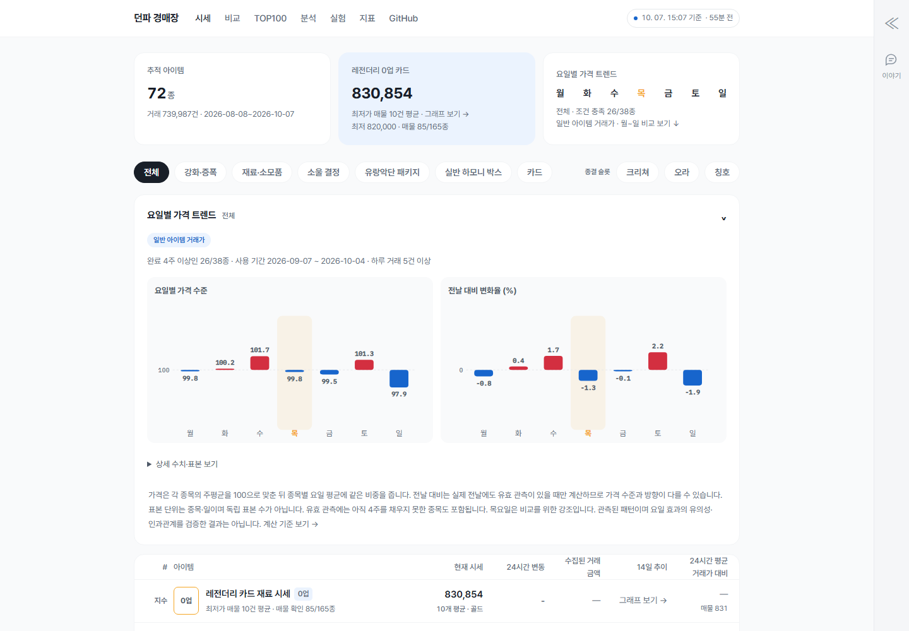
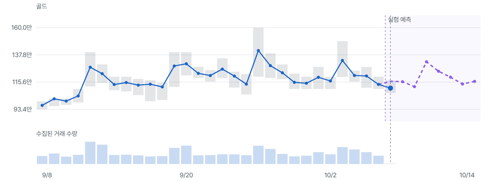

던파 경매장 시세 추적기
Neople Open API · PostgreSQL · 자동 수집·정합성 점검 · 가격·거래량 시각화


수치는 2026.10.07 공개 서비스 집계 기준이며, 수집 시작 시 API에서 조회한 과거 기록을 포함합니다. 체결 API는 한 번에 최근 100건까지만 제공하므로 누적 기록은 전체 거래량이 아니라 API에서 관측한 하한값입니다.
현재 최저 호가와 실제 체결가는 다르고, 체결 API는 최근 거래를 최대 100건까지만 제공합니다. 장기 추세를 비교하려면 짧게 열리는 기록을 지속적으로 쌓아야 했습니다.
품목별 기본 수집 주기를 정하고 거래가 몰리면 간격을 줄이도록 설계했습니다. 원본 체결·호가와 시간 단위 집계를 PostgreSQL에 분리 저장하고 최신성 점검을 자동화했습니다.
체결가와 호가를 구분하고 빈 관측을 0으로 채우지 않았습니다. 매물 감소는 취소가 섞일 수 있어 체결량과 합산하지 않았고, 표본이 적은 구간은 화면에 표시했습니다.
72개 품목에서 73만 건 이상의 체결 기록을 축적하고 가격·거래량·매물을 비교하는 서비스를 운영했습니다. 예측 실험은 단순 기준선보다 오차가 커 운영 판단 지표와 분리했습니다.
관찰 결과와 배운 점
최근 100건만 제공되는 구조에서는 거래가 활발한 품목일수록 기록이 누락될 가능성이 커졌습니다. 품목별 거래 속도에 따라 수집 주기를 2~60분으로 조정했습니다.
가격 분석 후보 38종 중 26종이 4주 이상·하루 평균 거래 52건 이상의 표시 조건을 충족했습니다. 이는 탐색적 관찰이며 요일 효과나 인과관계로 단정하지 않았습니다.
실험 예측은 직전 가격 유지 기준선보다 오차가 커 기본 판단 지표에서 제외했습니다. 후향 분석에서 찾은 4개 패턴은 판정 규칙을 고정한 전향 검증 FT1으로 확인 중입니다.
배운 점 복잡한 모델을 추가하기 전에 데이터가 충분한 간격으로 수집됐는지, 지표가 실제 거래를 어떤 범위까지 설명하는지부터 확인해야 했습니다. 보이지 않는 수집 공백과 지표의 한계를 함께 제시하는 것이 분석 결과 자체만큼 중요했습니다.
공개 API 데이터이지만, 기대하는 수집 주기와 실제 적재 상태를 대조하고 지연·중복·공백을 확인했습니다. 데이터의 의미와 한계를 문서화한 경험을 로그 검증 절차와 판단 기준을 정리하는 업무에 연결할 수 있습니다.